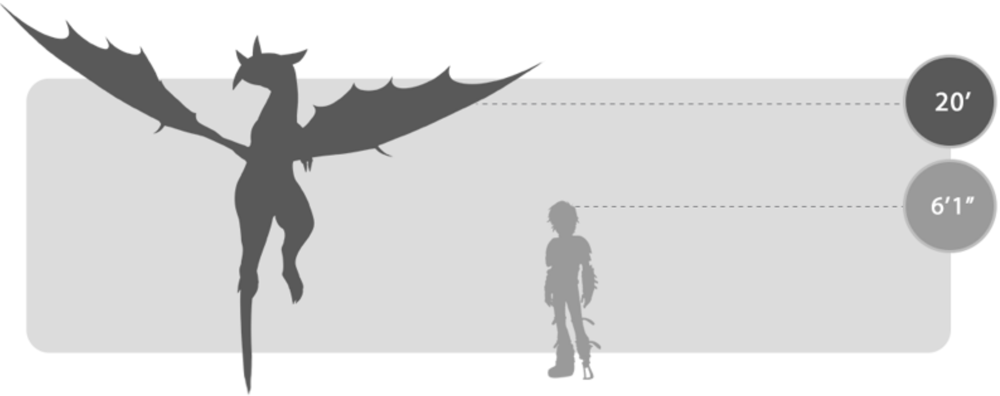
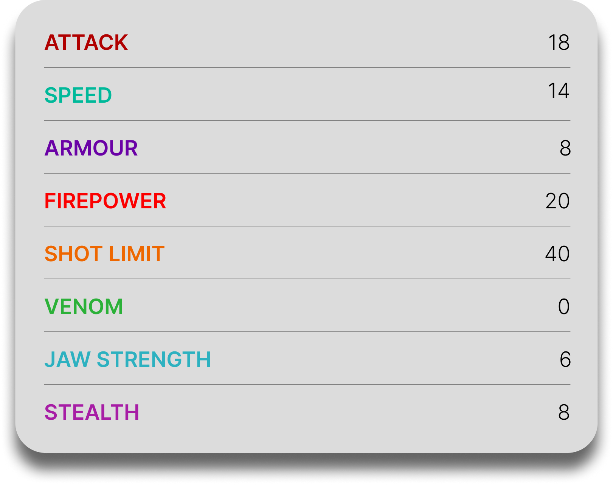
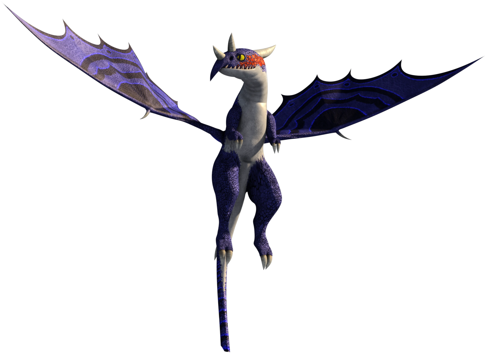

Dramillion
General Overview
The Dramillion is a medium-sized dragon belonging to the Mystery Class. Often referred to as the "parrot of the dragon world," it is famous for its extraordinary ability to mimic the fire blasts of any dragon it encounters. This unique trait makes it one of the most versatile and unpredictable dragons, capable of adapting its attacks instantly based on its surroundings and enemies.


Physical Appearance
- Body & Color: It has a sleek, colorful body with bright patterns, often featuring combinations of blue, green, yellow, and red tones.
- Head & Face: Its head is characterized by a curved, beak-like mouth and a peaked crown, giving it a bird-like appearance.
- Appendages: It has a lightweight build with strong limbs suited for agile movement and perching.
- Wings & Tail: Its wings are broad and flexible for controlled flight, while its tail helps with balance and precision during aerial maneuvers.
Abilities and Combat
- Fire Mimicry: It can replicate the fire blasts of any dragon it encounters, producing attacks that look and function exactly like the original.
- Fire Combination: It can combine multiple fire types into a single, more powerful blast.
- Unique Fire: It possesses its own original fire, a glowing yellow-purple flame that can explode on impact.
- High Shot Limit: It has one of the highest shot counts among dragon species, allowing it to fire repeatedly in combat.
- Pack Energy Sharing: Dramillions can share their fire reserves with each other, allowing exhausted individuals to continue fighting.
- Adaptability: Its ability to instantly copy enemy attacks makes it extremely difficult to counter in battle.
Behavior and Personality
- Intelligence: It is highly intelligent and capable of recognizing allies and enemies based on experience and visual cues.
- Temperament: Dramillions are generally wary and defensive, especially around humans due to past hunting.
- Behavior: They prefer to observe before acting, using mimicry to respond effectively to threats.
- Social Traits: They often live in small packs and cooperate closely, especially when sharing energy and coordinating attacks.
- Status: They are considered rare and were once hunted to near extinction by dragon hunters.
